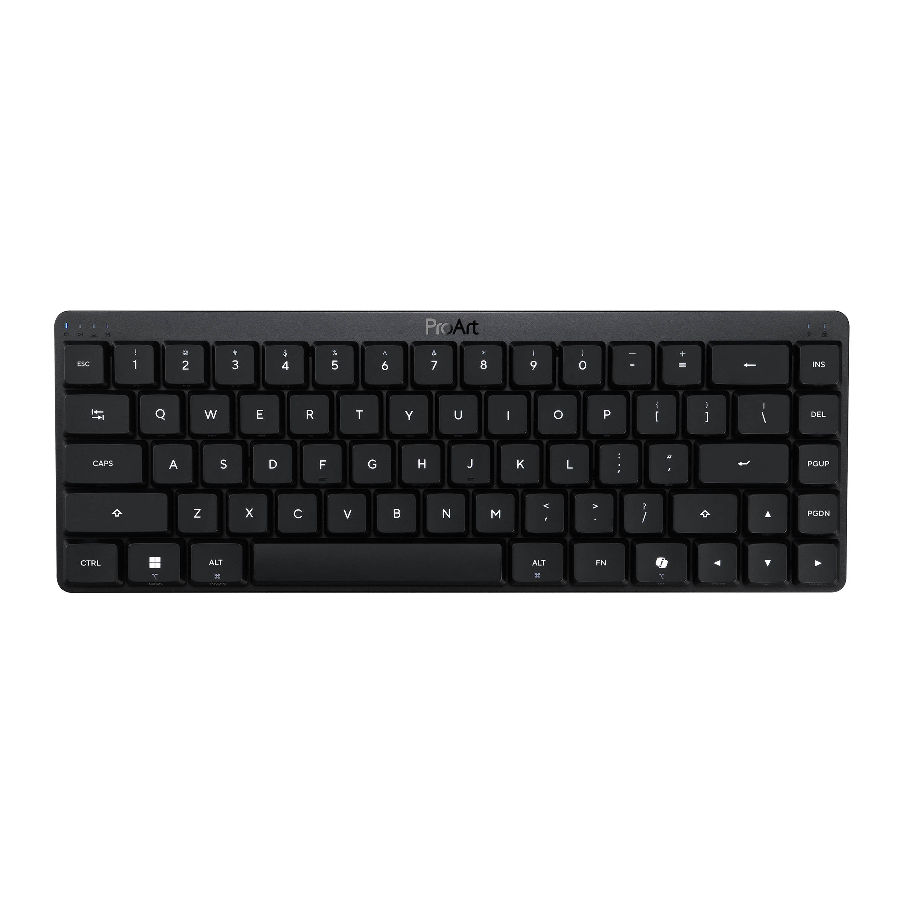

keyboard
常见概念
| 术语 | 含义 |
|---|---|
| click 青轴 | 段落 + 声音 |
| tactile 茶轴 | 段落 + 触感 |
| TKL | tenkeyless，无数字小键盘 |
| QMK/VIA | VIA 是通用的键盘灯光/层/宏设置软件 |
| JIS 配列 | 日本输入法阵列 |
| 层 | 类似 Shift/Fn，牺牲一个键作为 MO(1)，组合出其他键；也可定义为 Mac 层 |
| Macro 宏 | 一键输入一串文本（如 git add .），常配合“层” |
| NKRO | N 键无冲；薄膜一般只支持 6 键无冲，机械键盘有线/接收器可全键无冲 |
| Early adopter fee | 冷门/高科技尝鲜成本（小米金沙江、安克 160W、罗技 Master 4、GPW5、Cherry ULP、ROG 魔导士 RX LP、雷蛇灵刃 14、妙控系列） |
传统轴体
Cherry MX 8.3
- PBT 双色透光键帽，单键 RGB，铝坨坨，军火箱，半高悬浮键帽（下半部分易进杂物）。
| 整体颜色 | 轴体 |
|---|---|
| 黑色 | 红轴 |
| 金色 | 茶轴 |
| 极光银 | 极光银轴（线性轴，比红轴更静音，适合办公） |
| 繁花 | 繁花轴（定制茶轴，段落略小） |
客制化
- 4 种颜色 × 4 种轴体共 16 种选择（常见：繁花 × 极光，粉壳银轴/银壳粉轴）。
- 可选电池扩容、等高线键帽（个人感觉没必要：重量和续航已很顶级，且经常插线用；等高线可读性差且偏丑）。
- 黑色/金色是最初版本（红/茶轴）；极光银为 25 年 4 月 72 周年纪念版；繁花为 25 年 10.31 限定。
短键程键盘
矮轴
魔导士 RX Low Profile
- RX 为光轴；另有 NX 为传统机械轴。
键帽掉色；
红轴误触，蓝轴不容易误触、手感声音都最佳但是臭轴，只能用红轴将就着；
华硕 Armoury Crate 只能改第一层，Fn 层焊死；PowerToys 可对调，但对别的键盘也会生效；
新出了pro art kd300键盘，类似于rxlp的黑色版本，支持网页版驱动gearlink；
貌似只有红轴，按键灯光变成单一白色，上方的rgb灯条也取消了，上方文字改成了Pro Art；
左侧4个led显示触控条的状态，右侧两个led（图标都是锁，一个写着A一个写着M）
右CTRL变成copilot；（厚度26.8mm，应该是没变）
除此以外完全相同
但上面两个问题都没有解决，还是等rxlp二代吧。
- 红轴：声音小、丝滑，触发键程 1mm（cherry MX银轴是1.2mm，很多人说银轴容易误触，这个更容易）。
- 蓝轴：触发键程与压力更大，反馈更清晰；打字声也不大，办公室用非常完美。
- 22 年双十一买黑峡谷 X5 Pro（红轴），发现更喜欢 RGB。
- 26 年元旦买 RXLP（红轴），发现更喜欢 clicky（只要不太吵）。
- tactile 反馈不够清脆；clicky 的确认感更强。
- Mistel Airone BT 和 RXLP clicky 都不算很吵。
- 传统机械青轴太吵，茶轴更合适；需要静音时仍是 RXLP 红轴最佳。
Cherry MX 10.1
- 矮轴，PBT 键帽（不透光），彩色 RGB。
| 整体颜色 | 轴体 |
|---|---|
| 黑色 | 红轴（触发键程 1.2mm） |
| 银色 | 银轴（触发键程 1mm，较静音） |
超矮轴
Cherry ULP
- ultra low profile，手感接近薄膜：胶碗换成横向弹簧（蝶形支撑），支架由塑料改金属。
- 触发力大，但寿命更长且全键无冲。
- 23 年推出，主要在 MSI、外星人少数笔记本上。

其他超矮轴
- 其他品牌也有超矮光轴，但手感/品控较差，多为线性轴。
配列
108 配列
| 型号 | 要点 |
|---|---|
| Cherry KW X ULP | 8-13mm，640g，三模，单色灯光（个别键彩色） |
| 海盗船 K100 Air | 全键 RGB，11-17mm，780g，三模，不便携 |
小配列
Cherry ULP 2.0 Mini
Mistel Airone
- click 版本更接近传统机械：click 与 tactile 段落感一致，仅加入发声簧片。
- 品控较差，个别按键可能臭轴。

| 版本 | 要点 |
|---|---|
| 基础版 | 不支持蓝牙，只能有线连接 |
| BT | 灯光可用 Win11 或第三方软件调节；键位映射可用 PowerToys（全局生效） |
| Pro | 不支持蓝牙，只能有线连接；支持 VIA 调节灯光和宏 |
其他键盘
薄膜键盘
- 长键程：机房老式键盘。
- 短键程：蝶式/剪刀脚支撑；蝶翼易坏（早期 MacBook），现在多为剪刀脚。
- 一般只支持 6 键无冲。
常见型号：
- KU1255
- 雷蛇 乔罗金蛛（可做到全键无冲）
- Cherry Stream Ultimate
- Mac 剪刀脚键盘、妙控键盘
第一次见 EL 以为是 MacBook 机械键盘，后来发现只是剪刀脚薄膜键盘。
磁轴
- 带 RT 功能，不适合办公。
静电容轴
- 声音小。